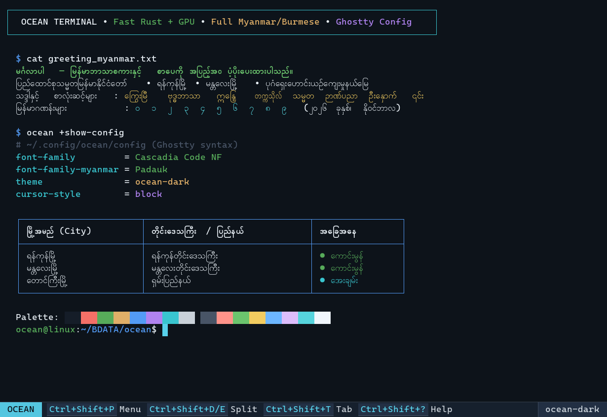
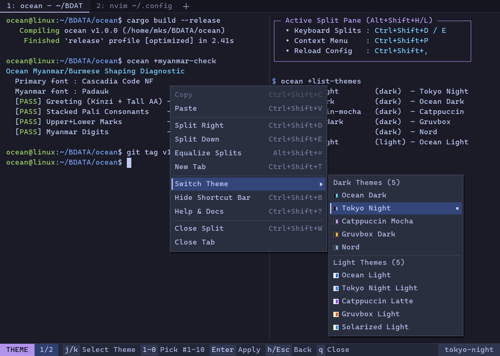
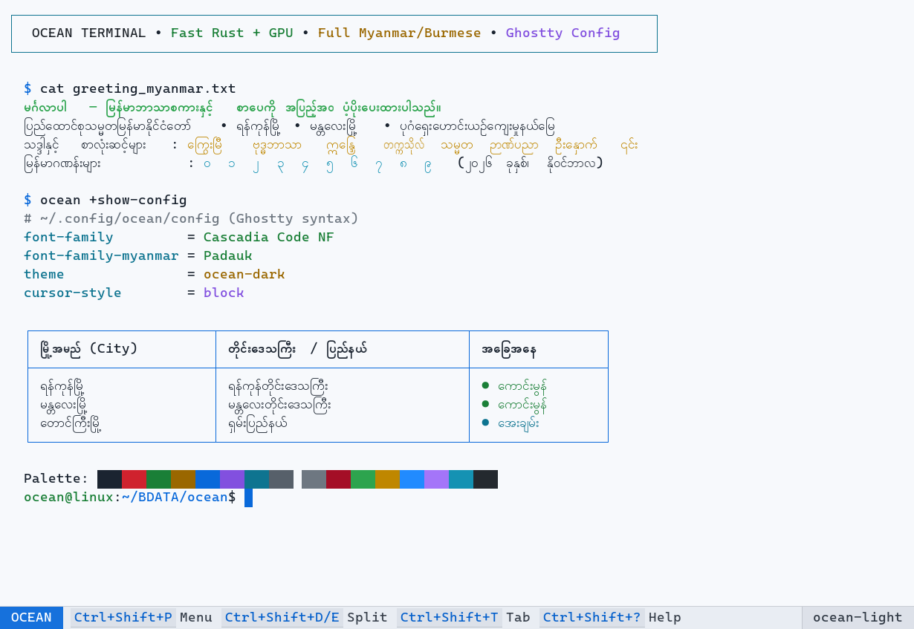

01 / TERMINAL
Fast and focused
Smooth terminal with tabs and split panes for everyday work.
- Keyboard-first tabs and splits
- Rounded pane borders with a clean, modern look
- Status bar with only the shortcuts you need

A clean, fast terminal for Linux with native Myanmar shaping, a built-in code editor, Git changes and blame, keyboard-first splits, and a focused dark or light theme.
curl -LO https://github.com/moekyawsoe/ocean/releases/latest/download/ocean_amd64.deb && sudo apt install ./ocean_amd64.deb



One lightweight app for running commands, editing code, and checking Git.
Smooth terminal with tabs and split panes for everyday work.
A small, fast editor for files, folders, and quick fixes.
Correct Burmese shaping without dotted circles or broken clusters.
One plain config file changes the app live.
Burmese syllables stay intact while typing, selecting, and deleting — no dotted circles or broken clusters.
ကုိ → ကို • ကေြ → ကြေ
Every tagged release (v*) automatically builds signed-checksum .deb, .rpm,
and portable binary packages via GitHub Actions with full desktop icons and launcher integration.
For Ubuntu 22.04+, Debian 12+, Linux Mint, Pop!_OS, Zorin, and Kali (amd64).
curl -LO https://github.com/moekyawsoe/ocean/releases/latest/download/ocean_amd64.deb sudo apt install ./ocean_amd64.deb
For Fedora, RHEL 9+, Rocky Linux, AlmaLinux, and openSUSE Tumbleweed/Leap (x86_64).
sudo dnf install https://github.com/moekyawsoe/ocean/releases/latest/download/ocean.x86_64.rpm
Run the standalone single binary on any Linux distro or compile with Cargo.
git clone https://github.com/moekyawsoe/ocean.git cd ocean cargo build --release
Ocean works immediately with zero configuration, auto-discovering your best installed Monospace and
Myanmar/Burmese system fonts. When you want to customize, Ghostty-style +actions are built right in.
Open Ocean Terminal from your desktop launcher or run ocean in any shell.
Run ocean +init-config to create a documented Ghostty-style config at ~/.config/ocean/config.
Run ocean +list-fonts and ocean +myanmar-check to confirm system fonts and OpenType shaping.
Press Ctrl+Shift+P for the Context Menu, Ctrl+Shift+D to split panes, or Ctrl+Shift+? for built-in docs.
# Create a starter config ocean +init-config # List themes or fonts ocean +list-themes ocean +list-fonts # Check Myanmar shaping ocean +myanmar-check
Edit ~/.config/ocean/config in your favorite editor — Ocean watches the file and applies font,
theme, padding, opacity, and keybinding updates immediately (or press Ctrl+Shift+,).
# Typography & Myanmar Fonts font-family = Cascadia Code NF font-family-myanmar = Padauk font-size = 13.5 editor-font-scale = 0.92 myanmar-font-scale = 1.12 myanmar-zawgyi = off # Theme & Window Appearance theme = ocean-dark background-opacity = 0.96 cursor-style = block window-show-tab-bar = auto window-show-status-bar = true window-padding-x = 10,10 window-padding-y = 8,8 # Keybindings (Ghostty syntax) keybind = ctrl+shift+p=toggle_context_menu keybind = ctrl+shift+d=new_split:right keybind = ctrl+shift+e=new_split:down keybind = alt+shift+h=goto_split:left keybind = alt+shift+l=goto_split:right keybind = ctrl+shift+m=toggle_myanmar_zawgyi
Switch live via Ctrl+Shift+P → Switch Theme (press t) or set
theme = <id> in config.
Every shortcut is customizable in ~/.config/ocean/config using keybind = mods+key=action.
| Shortcut | Action |
|---|---|
| Ctrl + Shift + P | Open the context menu in the terminal |
| Ctrl + P | Open the command palette in the editor |
| F1 | Open Help & Shortcuts in the editor |
| Ctrl + , | Open the editor Settings page |
| Ctrl + Shift + I | Switch between terminal and editor |
| Ctrl + Shift + O | Open the editor in a separate window |
| Ctrl + Shift + D / E | Split the terminal right / down |
| Alt + Shift + H/J/K/L | Move focus between split panes |
| Ctrl + Shift + T / W | New tab / close the active tab |
| Ctrl + Shift + C / V | Copy / paste |
| Ctrl + = / - / 0 | Larger / smaller / reset font size |